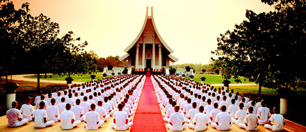

Computer Essentials (CST8101)
The essentials of computer software, hardware, and laptop management form the foundation for building further technical programming skills. Learn to configure your laptop environment, basic PC and troubleshoot problems.
Programming (CST8116)
Possessing the fundamentals of logic, problem-solving and programming language structure provides a solid foundation for further study in the field. Students develop introductory knowledge of computer programming with emphasis on problem analysis and design, using algorithms, pseudocode, flowcharts, UML Class Diagrams and testing, with the Java programming language used as a means to implement problem solution designs.
Database (CST8215)

Databases are used to store data and are a core component of many information technology systems. Students learn the fundamentals of relational databases design using Entity Relation Diagrams (ERDs), and use Structured Query Language (SQL) to create, modify and query a database.
Acheiving Success (CST8300)
Students explore the possibilities ahead, assess their own aptitudes and strengths, and apply critical thinking and decision-making tools to help resolve some of the important issues in our complex society with its competing interests.
Communications (ENL1813T)
Communication remains an essential skill sought by employers, regardless of discipline or field of study.Students develop and strengthen communication skills that contribute to success in both educational and workplace environments.
Mathematics (MAT8001C)

Students investigate computer number systems in addition to Boolean algebra and logic to help solve problems involving computer systems. Students also study the addition and subtraction of vectors using vector components.
Database-2 (CST2355)

Students obtain hands-on experience with advanced engineering modeling tools along with SQL, SQL scripts and programming with Oracle's PL/SQL blocks. Database concepts covered include advanced SQL, case structures, rollup and cube operations, metadata manipulation, data storage and retrieval, security and transaction control and data warehousing.
Operating systems (CST8102)
Students explore the basic concepts and components of Operating Systems (OS), and how they function and interact with hardware and software components. Students examine the details of operating system structures, process management, storage management, installation, configuration, and administration both in theory and through practical assignments
OOP's Java (CST8284)

Working in the field of information technology as a programmer requires a firm understanding of Object-Oriented Programming (OOP) concepts. Students explore object-oriented programming methodology using the Java programming language. Object oriented concepts, such as encapsulation, inheritance, abstraction and polymorphism are covered and reinforced with practical applications.
Web Programming (CST8285)
The World Wide Web (WWW) has become an integrated part of everyday life. Students develop basic skills of web programming, website design and implementation. JavaScript, HTML5, and PHP are used to explore web-based solutions to problems of increasing interactivity and complexity. Lectures are reinforced by practical assignments that encourage students to construct and maintain their own websites.
Tech Communications (ENL2019T)
Co-op Education (GEP1001)
Students are guided through a series of activities which prepares them for their co-op job search term. Through a detailed orientation students learn the cooperative education program policies and procedures related to searching and securing a work term opportunity.
World Religion (GED0336)
Students choose one course, from a group of general education electives, which meets one of the following four requirements: Arts in Society, Civic Life, Social and Cultural Understanding, and Science and Technology.